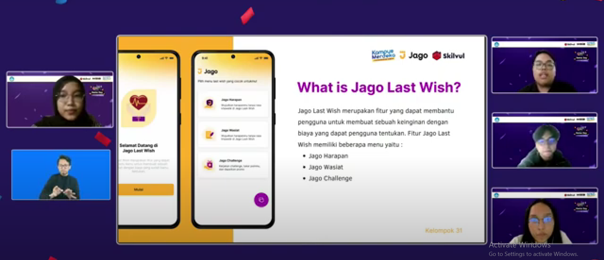

Profil
I'm Dinda umur 21 thn. Saya merupakan mahasiswi dari Universitas Dian Nuswantoro Semarang. Saya sangat tertarik untuk menjadi UI/UX Designer. Saat ini saya sedang belajar FrondEnd Development, mungkin ini menjadi pekerjaan dan pengalaman saya
Skill yang saya punya:
- UI/UX Designer
- Javascript
- CSS
- HTML
- Github
- VS Code
- Figma

Pengalaman

Saya pernah mengikuti program Magang & Studi Independen Bersertifikat UI/UX Designer di PT. Impactbyte Teknologi Edukasi (SKILVUL). Saya juga pernah mendapatkan juara 1 dalam design terbaik dalam beberapa kelompok